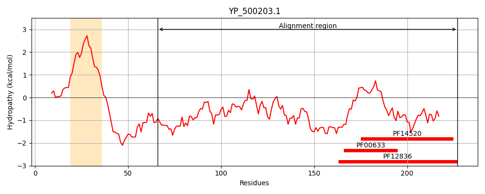
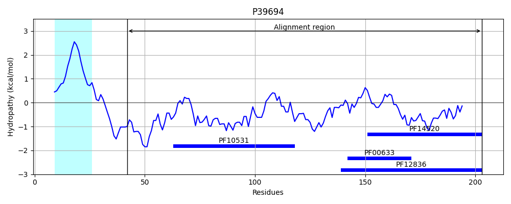
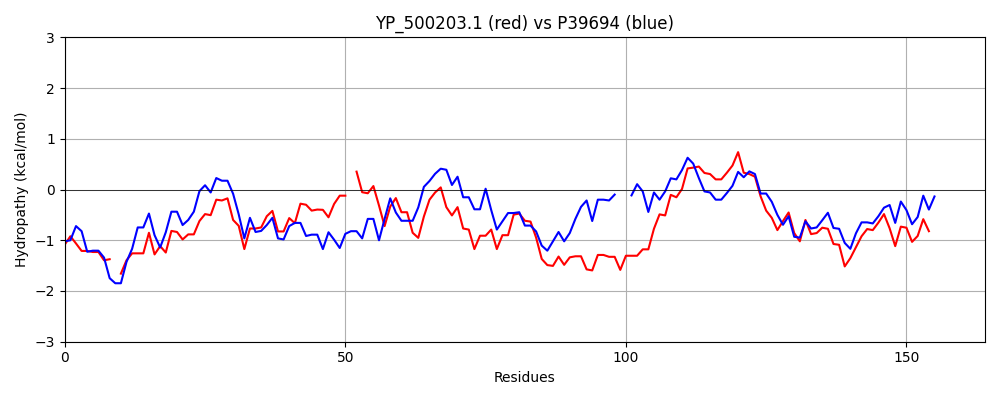

Hit Accession: P39694
Hit TCID: 3.A.11.1.1
Hit Description: gnl|BL_ORD_ID|10292 gnl|TC-DB|P39694|3.A.11.1.1 COME OPERON PROTEIN 1 - Bacillus subtilis.
Mach Len: 164
e:0.000000
Query TMS Count : 1
Hit TMS Count: 1
TMS-Overlap Score: 0.500000
Predicted Substrates:CHEBI:75980;single-stranded DNA polynucleotide
BLAST Alignment:
Score: 317 , Bit scores: 126 bits, E-value: 2.3e-36, Alignment length: 164, Percentage identity: 41
Query: 66 SKVEDVQVK-DGDNSKNKGPVYVDVKGAVKHPNVYKMTSKDRVVDLLDKAQ-LLEDADVSQINLSEKLTDQKMIFIPHKGQKNVEPQIEVNSVHEKNGNTNNTKVNLNTASVSELMSVPGVGQAKANAIVEYRNQQGAFQEIDDLKKVKGFGSKTFDKLKSYFT 227
++ E+ VK + +N ++ + +D+KGAV+HP VY+M + DRV ++KA E AD +Q+NL+E L D +++IP KG++ Q SV G VN+NTA++ EL + GVG +KA AI+ YR + G FQ I+D+ KV G G K+F+K+KS T
Sbjct: 42 TETENTVVKQEANNDESNETIVIDIKGAVQHPGVYEMRTGDRVSQAIEKAGGTSEQADEAQVNLAEILQDGTVVYIPKKGEETAVQQGGGGSVQSDGGK--GALVNINTATLEELQGISGVGPSKAEAIIAYREENGRFQTIEDITKVSGIGEKSFEKIKSSIT 203 | Protein Hydropathy Plots: |
|---|
|  |  |
Pairwise Alignment-Hydropathy Plot:
|
|---|
|  |